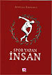
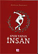

"Bilim Geleneğinde Süreklilik Sorunu: Felsefi Bir Değerlendirme"
vkamer tarafından Çar, 15/04/2009 - 13:05 tarihinde gönderildi.- Yorum göndermek için giriş yapın
- 1309 okuma
- Takvim
Patronage of the mathematical sciences in classical and post-classical Islamic societies until 1700
Kaan Ata tarafından Per, 09/04/2009 - 12:50 tarihinde gönderildi.- 1469 okuma
Bahar Dönemi Vize Programı
vkamer tarafından Salı, 07/04/2009 - 12:36 tarihinde gönderildi.- Yorum göndermek için giriş yapın
- 2258 okuma
- Takvim
Frege ve Aritmetiğin Temelleri
vkamer tarafından Cum, 20/03/2009 - 17:07 tarihinde gönderildi.- Yorum göndermek için giriş yapın
- 1847 okuma
- Takvim
Atilla Bir Armağan Kitabı Sunuş Toplantısı
Özgüç Güven tarafından Çar, 04/03/2009 - 14:21 tarihinde gönderildi.Osmanlı Bilimi Araştırmaları
dergisinin özel sayısı
- Devamını oku
- 1826 okuma
Erasmus Programı'yla Yurtdışında Eğitim Görmek İçin Başvurular Başladı
Özgüç Güven tarafından Pzt, 02/03/2009 - 14:23 tarihinde gönderildi.
2009-2010 akademik yılında Erasmus Programı ile yurt dışındaki anlaşmalı üniversitelere misafir öğrenci olarak gitmek isteyen öğrencilerimiz için başvuru koşulları:
• Türkiye Cumhuriyeti vatandaşı veya,
- Avrupa Birliği veya Avrupa Ekonomik Alanı üyesi ülkelerden birinin vatandaşı veya,
- Avrupa Birliği üyeliğine aday ülke vatandaşı veya,
- Türkiye Cumhuriyeti tarafından mülteci olarak tanınmış, vatansız veya daimi ikamet almış olması gerekmektedir.
- Yorum göndermek için giriş yapın
- Devamını oku
- 2193 okuma
Doç. Dr. Attilla Erdemli'nin "Spor Yapan İnsan" isimli kitabı okurlarıyla buluşuyor...
Özgür Yılmaz tarafından Paz, 01/03/2009 - 22:44 tarihinde gönderildi.
 

Bölümümüz öğretim üyelerinden Doç. Dr. Attilla Erdemli'nin "Spor Yapan İnsan" isimli yeni kitabı çıktı.Kitabın tanıtım yazısında aşağıdaki parça yer alıyor:
- Yorum göndermek için giriş yapın
- Devamını oku
- 2343 okuma
Lisans ve Lisansüstü Bahar Dönemi Ders Programları
vkamer tarafından Pzt, 23/02/2009 - 16:37 tarihinde gönderildi.- Yorum göndermek için giriş yapın
- 2479 okuma
Felsefe Tarihi Anabilim Dalı Araştırma Görevlisi Mülakat Sınavı
Özgür Yılmaz tarafından Salı, 13/01/2009 - 13:45 tarihinde gönderildi.- Yorum göndermek için giriş yapın
- 2543 okuma
- Takvim
Feyerabend'la Kısa Bir Tanışma
vkamer tarafından Per, 08/01/2009 - 11:38 tarihinde gönderildi.- Yorum göndermek için giriş yapın
- 1641 okuma
- Takvim
2013-2014 Ders Programı
G: I. Öğretim | II. Öğretim
Lisansüstü | Bilimsel Hazırlık
B: I. Öğretim | II. Öğretim
Lisansüstü | Bilimsel Hazırlık
2012-2013 Ders Programı
G: I. Öğretim | II. Öğretim
B: I. Öğretim | II. Öğretim
Lisansüstü | Bilimsel Hazırlık
2011-2012 Ders Programı
G: I. Öğretim | II. Öğretim
Lisansüstü | Bilimsel Hazırlık
B: I. Öğretim | II. Öğretim
Lisansüstü | Bilimsel Hazırlık
Danışmanlar: node/377